١٩١١ إلى ١٩١٨ · كشوف حساب ورسائل التاجر الكويتي محمد بن عبدالله المتروك
عبدالعزيز بن قطامي في دفاتر تجارة المتروك
ما هي
يرد اسم عبدالعزيز بن قطامي في نحو ثلاثين كشف حساب ورسالة للتاجر محمد بن عبدالله المتروك بين ١٩١١ و١٩١٨. وفي رسالة إلى كراتشي عام ١٩١٢ يُذكر أنه سيسافر في المركب القادم مع عبدالعزيز السعود والعثمان. وفي رسالة أخرى عام ١٩١٢ يسافر مع خالد بن خميس، ويسجل دفتر عام ١٩١٥ بضاعة عنده.
أهميتها
تُظهر والد جاسم تاجرا نشطا في التجارة بين الكويت والبصرة والهند في السنوات التي سبقت الحرب العالمية الأولى.
من المقصود
أكدت العائلة أن عبدالعزيز بن قطامي في سجلات الكويت في هذه الفترة هو عبدالعزيز بن عبدالوهاب والد جاسم. ويذكر دفتر عام ١٩١٨ ابنه باسم عبدالوهاب بن عبدالعزيز بن قطامي.
صور الصفحات
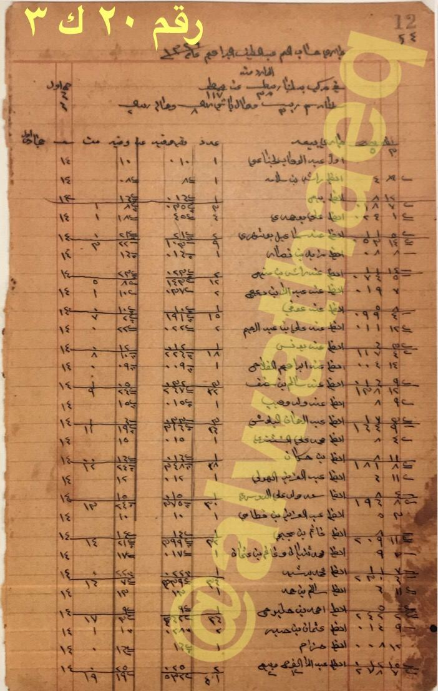


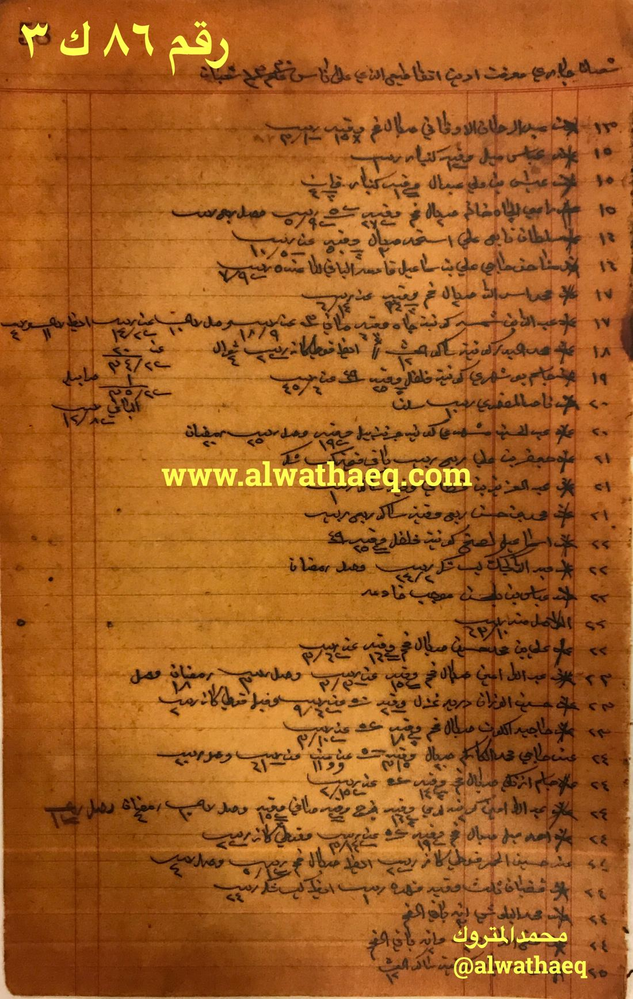
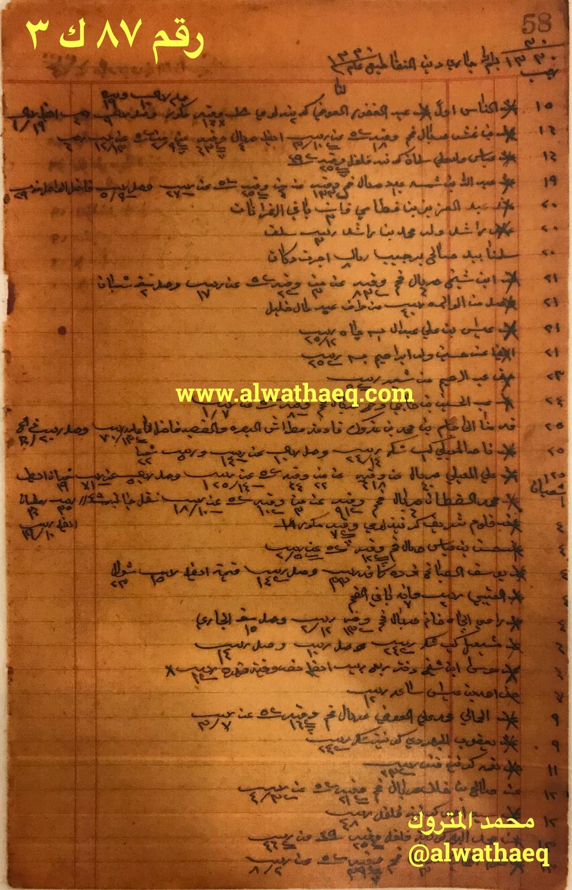
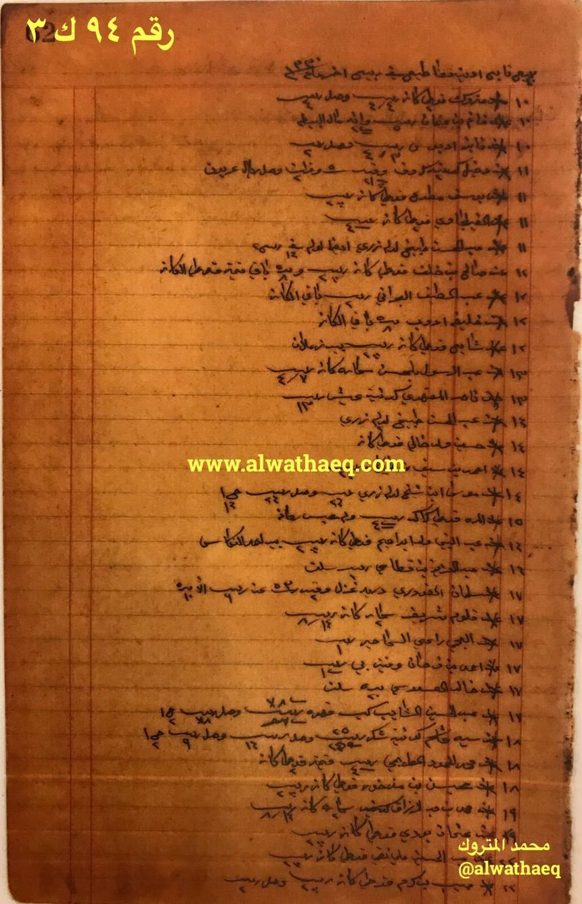
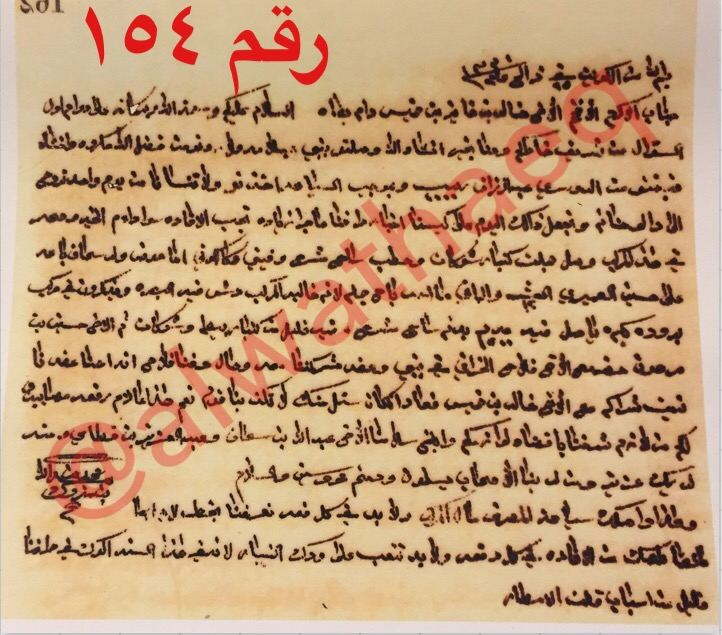
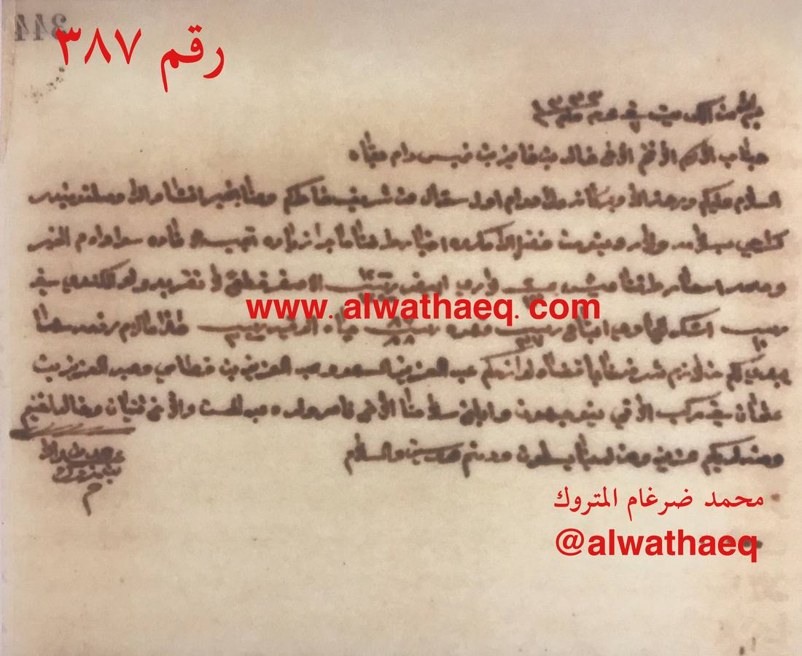
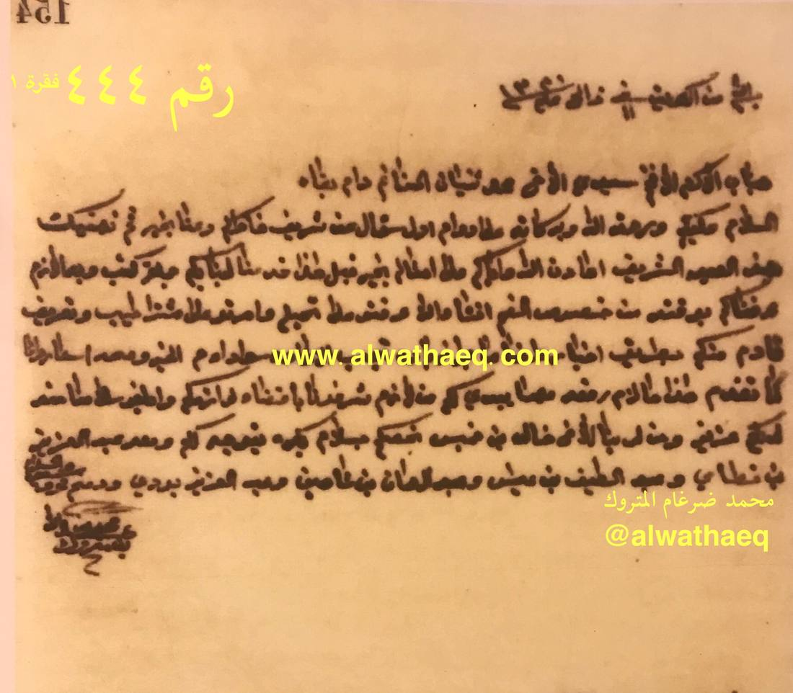


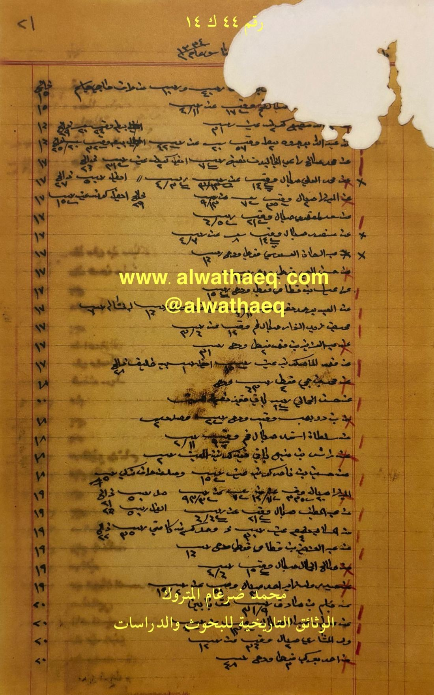
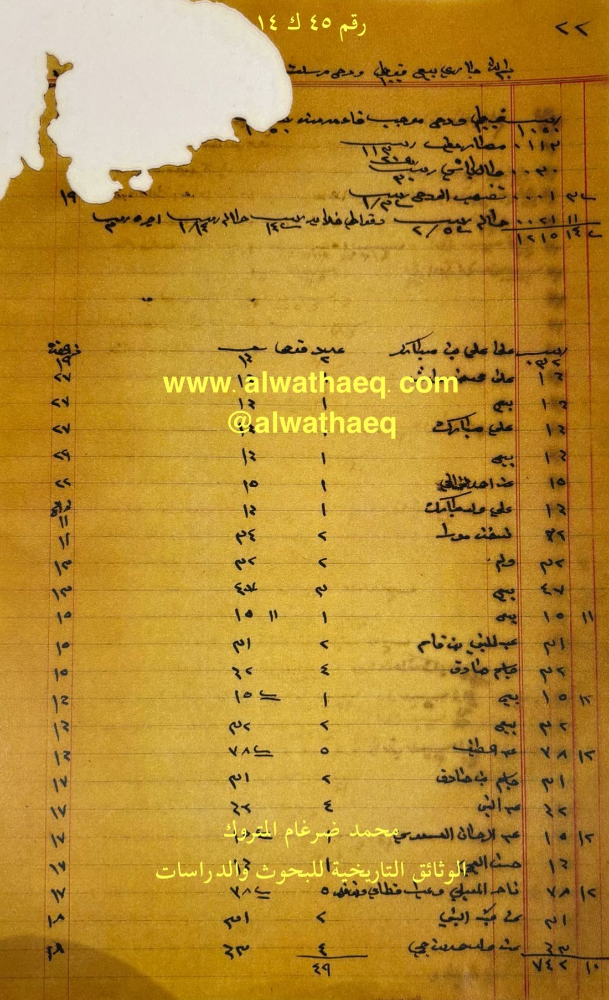

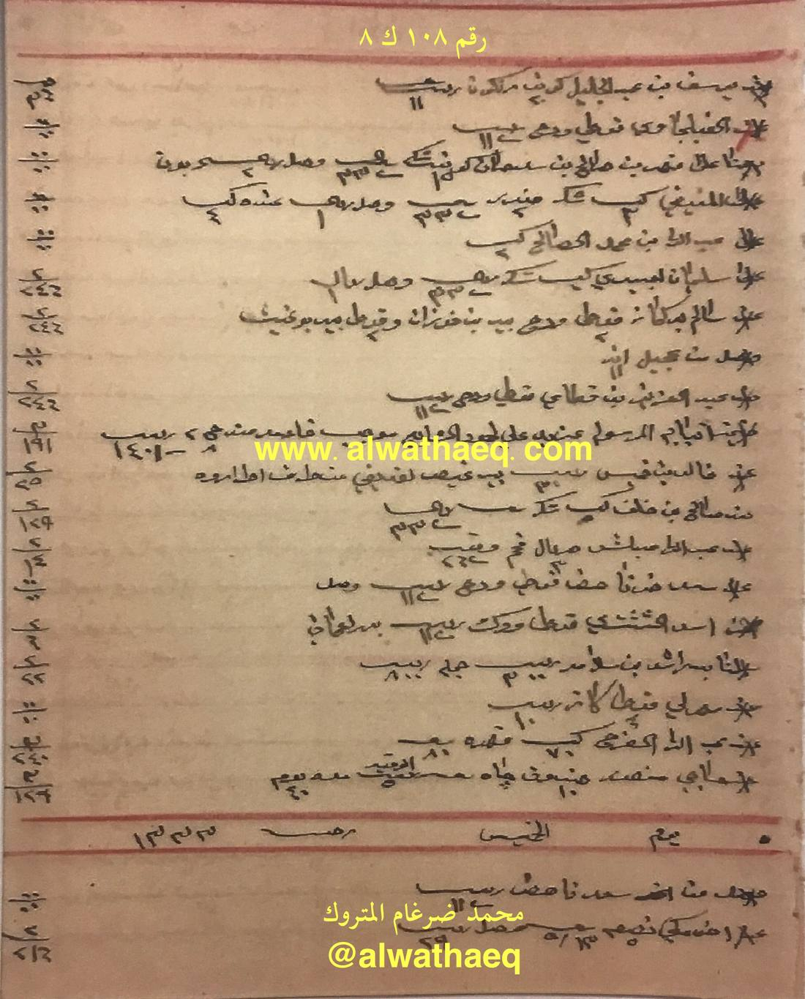


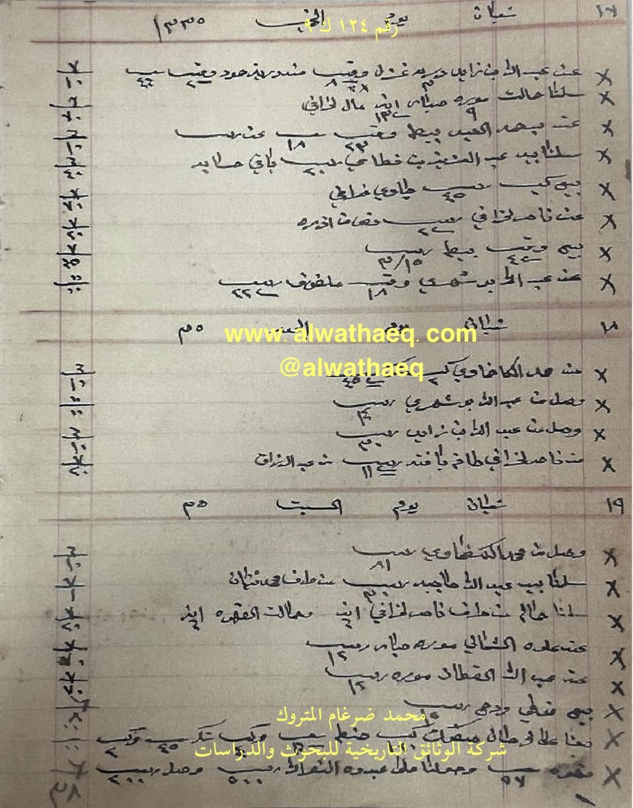
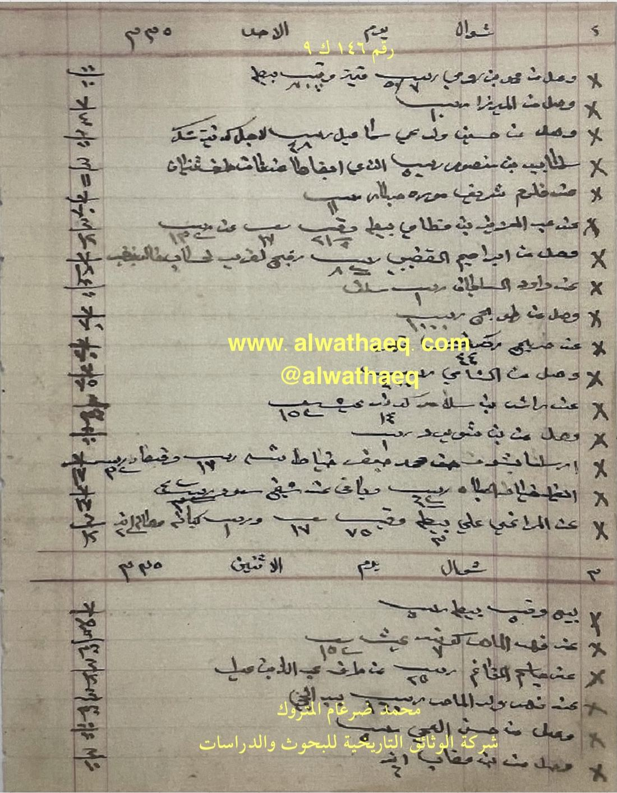

النص الأصلي
ملاحظات
ينشر موقع الوثائق هذه الدفاتر صورا مع مقتطفات مطبوعة للأسماء والبنود، لا قراءة كاملة. والسطور أعلاه من مقتطفاتهم. وجميع الدفاتر الثمانية والعشرين التي تذكره محفوظة في درايف العائلة.
أسماء أخرى
المصادر
موقع الوثائق (alwathaeq.com): دفاتر ورسائل التاجر الكويتي محمد بن عبدالله المتروك، مع شرح وتعليق محمد ضرغام المتروك. الصور كما نشرها موقع الوثائق.
مرجع الأرشيف
- Letter 387 · 1912
- Letter 444 · 1912
- Document 108, book 8 · 1915
كيف كُتب هذا النص: المقتطفات العربية كما نشرها موقع الوثائق. الترجمة الإنجليزية من Claude، يرجى مراجعتها.
افتح في الموقع التفاعلي